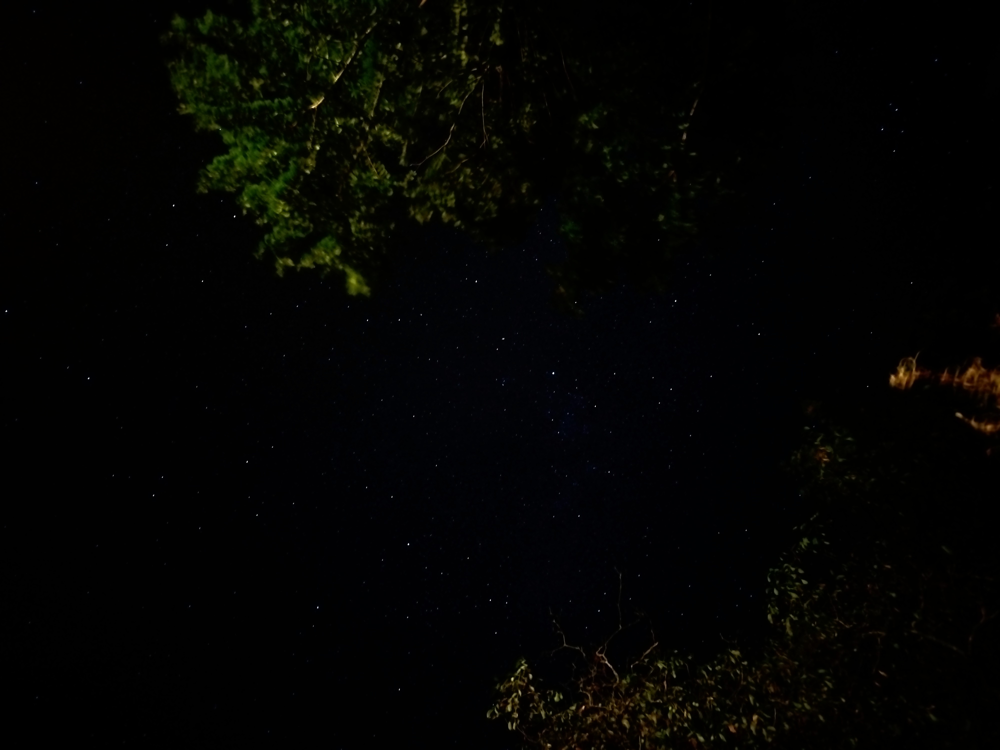

Sprüche
- „Wir sind zwei Enden eines schlechten Extremas.“
- M.
Kontext: Zu viel und zu wenig essen, geht es einem schlecht
- „Es ist Wasser. Und es ist sauer.“ 🚩
- Frau H.
Kontext: Chemieunterricht
- „Was darf Satire? - was darf Realität?“
- Jan Böhmermann
Magazin Royale, 25/10/24
- „Entschuldigung, ich hab verschlafen“ - 14:37h im Unterricht
- A.
- „Ein Stück Erde, um den Himmel liegend betrachten zu können“
- Jerry
Kontext: Schwebendes Stück Land am Freundewochenende


- „Wenn man sich so vorkommt, als würde einen das ganze Leben mit Klammern umschließen“
- Jerry
- „Artificial reality“
- Eevee
Kontext: ‚The rise of whatever‘, Blogpost
- „Wie war Schule heute?“ - [genervtes] „Schrecklich“ - „Was war denn am schlimmsten?“ - „Ich“
- M, Jerry
- „Nein nicht nichts tun und nur denken, das ist nicht gut.“
- Jerry
- „Stimmt warum steh ich am Wochenende eigentlich auf? Ich kann doch auch übers Handy streamen“
- Jerry
- „Reife ist auch nur ein Ausdruck dafür, wie viel Elend man schluckt.“
- Johnny Depp als Richard Brown in The Professor